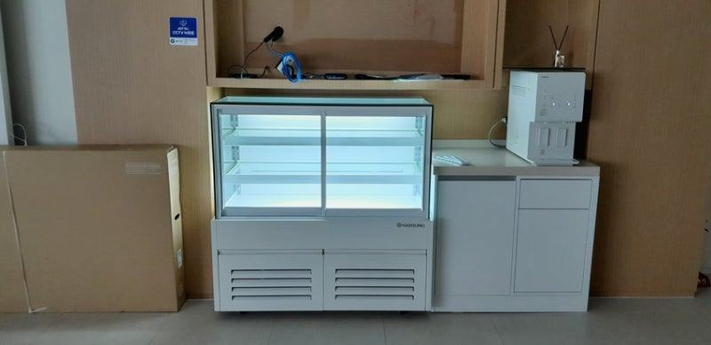
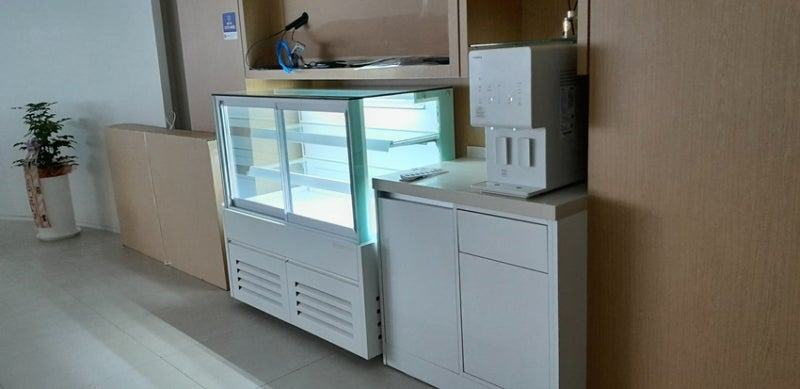
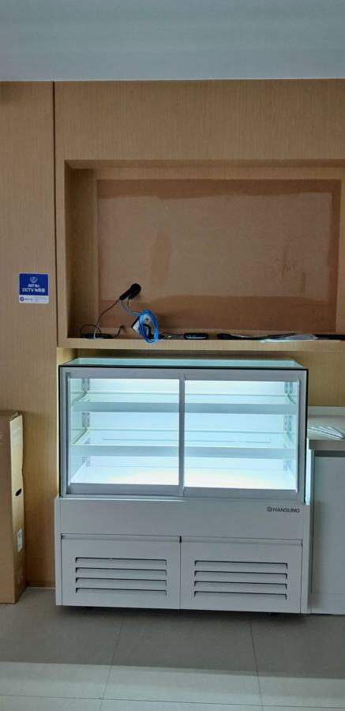
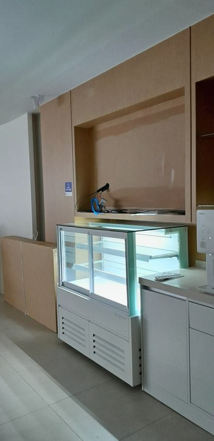

한성제품
냉장쇼케이스 AS, 오래 쓴 제품은 고칠까 바꿀까

냉장쇼케이스 AS는 증상이 한 부위에 국한되고 몸체·콤프레셔가 버텨 주면 수리가 낫고, 같은 고장이 반복되거나 매장 구성이 바뀌어 크기가 안 맞으면 교체를 함께 따져 보는 게 맞습니다. 어느 쪽이든 접수 전에 증상과 명판 정보를 정리해 두면 처리 시간이 줄어듭니다.
안녕하세요. 매장에 맞춘 냉장쇼케이스를 만들고 사후 관리까지 챙기는 한성쇼케이스입니다.
몇 년 쓰신 쇼케이스가 어느 날부터 시원찮아지면 사장님들 마음이 복잡해집니다. "이번에 고쳐도 또 말썽일 텐데, 차라리 새로 들일까?" 하는 고민이죠.
냉장쇼케이스는 하루 종일 켜져 있는 장비라 고장 하나가 그대로 상품 손실과 영업 공백으로 이어집니다.
그래서 무작정 기사님을 부르기보다, 증상을 먼저 가려 보고 수리와 교체 중 어느 쪽이 맞는지 판단하는 순서가 필요합니다.
오늘은 AS를 부르기 전에 직접 볼 것, 고칠 때와 바꿀 때를 가르는 기준, 접수할 때 준비할 정보를 차례로 짚어 보겠습니다.
1. 기사님 부르기 전에 직접 볼 것
냉기가 약해졌다고 해서 모두 부품 고장은 아닙니다. 뒷면이 벽에 바짝 붙어 있거나 뒤쪽에 박스가 쌓여 열이 빠지지 못하면 콤프레셔가 쉬지 못하고 냉각이 더뎌집니다.
커피 머신이나 오븐 바로 옆, 햇빛이 오래 드는 자리로 옮긴 뒤 증상이 생겼다면 위치부터 의심해 보세요.
문 패킹이 들떠 틈이 생긴 경우도 흔합니다. 문을 닫은 상태에서 종이 한 장을 끼워 쉽게 빠지면 냉기가 새고 있다는 뜻입니다.
설정 온도가 누군가의 손에 바뀌어 있지는 않은지도 확인해 보세요.
- 뒷면과 벽 사이 통풍 공간이 막혀 있지 않은지
- 주변에 열을 내는 기기가 새로 생기지 않았는지
- 문 패킹이 갈라지거나 들뜬 곳이 없는지
- 컨트롤러 설정 온도가 그대로인지
2. 수리로 충분한 경우
조명이 나갔다, 팬 소리가 커졌다, 문 경첩이 처졌다처럼 부위가 분명한 증상은 대개 부품 교체로 해결됩니다.
몸체에 녹이나 찌그러짐이 없고, 콤프레셔가 정상적으로 온도를 끌어내린다면 손볼 곳만 고쳐 쓰는 편이 합리적입니다.
온도 컨트롤러 오작동이나 센서 이상도 수리 범위에 드는 경우가 많습니다. 진열 상품과 매장 구성이 그대로라면 익숙한 제품을 계속 쓰는 것도 장점입니다.
다만 수리 뒤에도 같은 자리에 열원이 그대로 있다면 증상이 다시 나타날 수 있으니, 설치 환경도 함께 손봐 두시길 권합니다.


3. 교체를 함께 따져 봐야 하는 경우
같은 증상으로 여러 번 수리를 받았거나, 콤프레셔가 지쳐 설정 온도까지 내려가는 데 한참 걸린다면 다음 고장도 머지않았다고 보시는 게 안전합니다.
부품이 단종돼 구하기 어려운 모델이라면 수리 대기 기간 자체가 손실이 됩니다.
매장 구성이 달라진 경우도 교체 시점입니다. 음료 위주에서 디저트나 반찬으로 품목을 바꿨는데 선반 높이와 문 방식이 그대로라면, 고쳐 써도 진열이 계속 어색합니다.
이럴 땐 지금 매장 폭과 진열 상품에 맞춘 제작을 함께 견적 받아 비교해 보세요.
- 같은 고장이 반복되는지
- 부품 수급이 가능한 모델인지
- 지금 파는 상품과 진열 구조가 맞는지
4. AS 접수할 때 준비할 정보
제품 측면이나 뒷면 명판의 모델명과 제조 연월을 사진으로 찍어 두세요. 증상은 언제부터, 하루 중 언제 심한지, 소리나 냄새가 있는지 함께 적어 두면 기사님이 필요한 부품을 챙겨 한 번에 방문할 가능성이 높아집니다.
한성쇼케이스는 전국 240여 개 A/S 센터를 운영하고 있어 지방 매장도 가까운 곳에서 접수하실 수 있습니다.
대표전화 031-986-2458로 증상과 사진을 보내 주시면 순서대로 안내해 드립니다.
체크리스트
- 뒷면 통풍과 주변 열원 확인
- 문 패킹 상태와 설정 온도
- 같은 증상의 반복 여부
- 명판 모델명·제조 연월 사진
- 증상 시작 시점과 소리·냄새 메모
현장에서 자주 보는 경우: 수리 기다리는 며칠이 더 아플 때
쇼케이스를 고를 때 브랜드부터 찾는 사장님이 많은 이유는 결국 A/S입니다. 수리 센터가 멀거나 인력이 적은 곳은 접수부터 방문까지 며칠이 걸리기도 하고, 그동안 진열을 멈추면 영업 손실이 고스란히 쌓입니다.
한성쇼케이스는 그동안 쌓아 온 수리 경험을 바탕으로 쇼케이스를 쓰지 못하는 시간을 줄이는 데 초점을 둡니다.
맞춤 제작 상담 때부터 설치 지역과 A/S 동선을 함께 확인해 두시면 고장이 났을 때 대응이 훨씬 빨라집니다.





자주 묻는 질문
다른 곳에서 산 쇼케이스도 AS를 받을 수 있나요?
모델과 증상에 따라 다릅니다. 명판 사진과 증상을 먼저 보내 주시면 부품 수급과 수리 가능 여부를 확인해 안내해 드립니다.
냉기가 약한데 당장 할 수 있는 응급 조치가 있을까요?
뒷면 통풍 공간을 비우고 주변 열원을 치운 뒤, 문 여닫는 횟수를 줄여 보세요. 그래도 온도가 내려가지 않으면 상품을 다른 냉장고로 옮기고 접수하시는 편이 안전합니다.
수리와 교체 견적을 같이 받아 볼 수 있나요?
가능합니다. 현재 제품 상태와 매장 실측 치수를 알려 주시면 수리 범위와 맞춤 제작 구성을 함께 비교해 보실 수 있게 안내해 드립니다.
매장 조건에 맞춰 만드는 한성쇼케이스
원하시는 제품 사진과 설치할 공간 사진만 보내 주셔도 매장에 맞는 구성을 추천해 드립니다.
- 전국 240여 개 A/S 전담 센터 운영
- 본사 대량 자재 매입으로 품질 대비 합리적인 가격
- 유럽제·삼성 냉각 콤프레셔 적용
- 국내 최초 쇼케이스 전문 디자이너 상주
매장 폭과 원하는 진열 구성을 알려 주세요. 실측과 견적을 안내해 드립니다.
031-986-2458